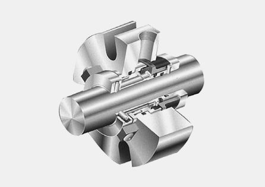

Проектирование механических уплотнений КОНСУЛЬТАЦИЯ ИНЖЕНЕРА
Этапы проектирования
-
1. Определение требований
В понимании принципа работы механических уплотнений нам поможет Рисунок №1 (см. ниже). На нем красным цветом изображено неподвижное кольцо, которое жестко крепится к задней стенке корпуса насоса. Чтобы между неподвижным кольцом и корпусом насоса не было утечек, используется эластомерный элемент. Поскольку кольцо неповижно, то этот эластомер не испытывает трения, а следовательно не изнашивается. Вал рабочего колеса проходит внутри неподвижного кольца, но не задевает его. Это важный момент, так как если бы кольцо и вал контактировали, то между ними не проходила бы жидкость, и само по себе кольцо было бы уплотнителем.
-
2. Моделирование
Сама идея торцевого уплотнения исключает трение между валом и уплотнением. Трение приводит к износу и вала и уплотнения и поэтому сальниковые и манжетные уплотнения недолговечны и требуют регулярного осмотра и замены. Поскольку вал не задевает неподвижное кольцо, то между ними свободно проходила бы жидкость, если бы не второе вращаемое кольцо (4), которое насажено на вал вплотную к неподвижному. Поверхность подвижного и неподвижного колец и называют парой трения. Эта пара трения единственный трущийся элемент конструкции. В зазоре между кольцами, который составляет меньше микрона, образуется тончайшая пленка жидкости.

-
3. Моделирование
Для упрощения конструкции подвижное кольцо следовало бы жестко закрепить на валу и место стыка вала с кольцом уплотнить эластомером. Тогда вся конструкция состояла бы только из пары колец, одно из которых прикреплено к задней стенке насоса, а другое к валу. К сожалению, это невозможно, ибо во время работы насоса происходит осевое смещение вала. Это приведет к тому, что кольца сближались бы друг с другом, а затем удалялись. В увеличенный зазор между ними будет попадать жидкость, даже если величина зазора составит всего 0,01 мм. Весь герметизирующий принцип пошел бы насмарку. Необходим элемент, который будет обеспечивать непрерывный и плотный контакт между двумя кольцами уплотнения. Этим элементом будет выступать пружина или сильфон.
КАТАЛОГ ПРОДУКЦИИ
Оставьте Ваши контакты и мы вышлем Вам на почту полный каталог механических уплотнений “Графлекс” с подробным описаниеми и всеми спецификациями